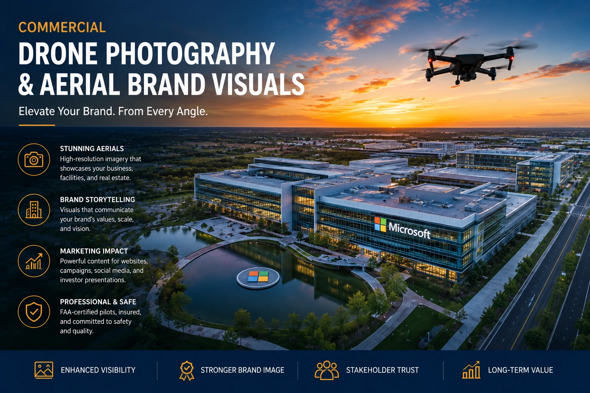
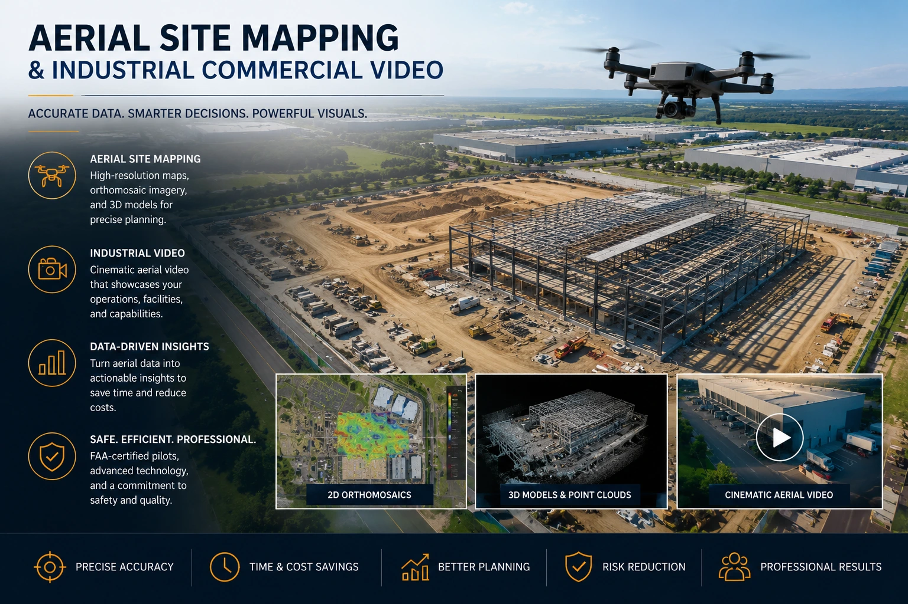

Using Architectural Drone Photography to Showcase Large-Scale Brand Infrastructure
The Scale Problem That Ground-Level Photography Cannot Solve
There is a category of brand communication that photographs beautifully from the ground and communicates nothing from the ground: the communication of scale. A manufacturing facility that employs five hundred people and covers twelve acres of operational infrastructure is, at ground level, a series of photographs of walls, machinery, and corridors — individually competent images that collectively fail to communicate the single most commercially important fact about the facility: that it is enormous, capable, and built for serious production volume.
The same problem applies to logistics centres, construction developments, solar installations, agricultural operations, port facilities, and every other category of large-scale corporate infrastructure where the brand's credibility is expressed primarily through physical scale that is invisible to ground-level photography. The visual gap between what these facilities actually are and what ground-level corporate photography shows is the gap that commercial drone photography closes — permanently and persuasively.
This guide covers how commercial drone photography, corporate infrastructure videography, and aerial brand visuals are used by Indian industrial and corporate brands to communicate scale, capability, and credibility in their investor communications, B2B sales materials, recruitment content, and public brand presence.
What Aerial Brand Visuals Communicate That Ground Photography Cannot
Aerial brand visuals communicate a specific category of brand information that has no equivalent in ground-level photography — the spatial and operational context of a brand's physical presence. From the air, a facility communicates simultaneously: its scale relative to its surroundings, the organisation and efficiency of its layout, the density of its operational activity, the quality of its site management, and the relationship between its infrastructure and the landscape or community it occupies.
These are not decorative communications — they are commercially significant ones:
Investor and Lender Credibility
An aerial image of a manufacturing plant or logistics facility communicates physical asset value and operational scale to investors and lenders in a way that no balance sheet entry or written description can. The image is evidence — visible, undeniable evidence that the operational infrastructure the brand claims to have actually exists at the scale claimed.
B2B Procurement Trust
For manufacturing and supply chain businesses whose customers are making procurement decisions based on production capability and reliability, an aerial view of the facility communicates capacity and operational seriousness at a scale that ground-level photography and brochure specifications cannot match. The physical reality of the plant is the most persuasive sales argument available.
Recruitment and Employer Brand
Candidates evaluating career opportunities at industrial and manufacturing companies form immediate impressions from aerial facility imagery — the scale of the operation, the quality of the site management, the relationship between the facility and its community. Aerial brand visuals are a powerful employer brand tool for industries where facility quality is a direct signal of operational culture and career trajectory.
Government and Regulatory Relations
Infrastructure projects, planning applications, and regulatory approvals frequently require documented evidence of physical scale and operational layout. Aerial photography and site mapping assets serve these requirements simultaneously with their commercial brand communication function.

Corporate Infrastructure Videography: The Moving Image of Operational Scale
Corporate infrastructure videography using aerial drone platforms produces a category of video content that is fundamentally different from standard corporate video — because it uses movement through three-dimensional space to communicate the operational reality of a facility in a way that static aerial photography cannot. A drone moving from a wide aerial establishing shot down to ground level, through a facility gate, along a production line, and back out to a wide aerial close is communicating something about the scale and integration of the operation that no combination of static images can replicate.
The specific corporate infrastructure videography sequences that produce the highest commercial impact for Indian industrial brands:
- The revealing reveal sequence. The drone begins high and wide, establishing the facility in its landscape context — showing the size of the site, the scale of the buildings, the surrounding infrastructure. It then descends and moves toward the facility, progressively revealing operational detail: loading docks with vehicles, production floor activity through clerestory windows, machinery silhouettes visible through skylights, the organised movement of people and equipment across the site. This sequence communicates scale and activity simultaneously — the most powerful single sequence in corporate aerial videography.
- The perimeter survey sequence. A single orbit around the full facility perimeter, at consistent altitude and distance, produces a comprehensive visual record of the facility's physical footprint and external condition. This sequence is used for investor presentations, facility condition reports, and planning documentation — and it produces a visual document of the facility's scale that no verbal description or static image can replicate.
- The transition sequence. A smooth drone shot that transitions from aerial to ground-level — following a product from raw material arrival at the loading dock through the production process and out as finished product at the despatch area — communicates the operational flow of a manufacturing facility in a single, continuous visual narrative. This is the manufacturing facility video tour format at its most cinematically compelling.
- The operations density sequence. A tightly composed aerial shot hovering over the most active operational area of the facility — the production floor, the logistics yard, the construction site — during peak operational activity. The density of human and mechanical activity visible from above communicates operational scale in a way that no individual ground-level shot of a single person or machine can achieve.
Manufacturing Facility Video Tours: The B2B Sales Asset
The manufacturing facility video tour is the most commercially direct application of corporate infrastructure videography for Indian manufacturing and industrial brands — and it is also the most frequently underinvested in category of brand video content.
A professionally produced manufacturing facility video tour serves multiple commercial purposes simultaneously:
- B2B procurement presentations. A prospective client evaluating a manufacturing partner watches a facility tour before agreeing to a factory visit — and in many cases, a high-quality facility tour replaces the factory visit for international or distant domestic clients who cannot travel. The video communicates production capability, quality standards, team size, and operational scale with sufficient fidelity that a procurement decision can be informed by it.
- Website and LinkedIn anchor content. A facility tour embedded on the corporate website's about or capabilities page is the most compelling single piece of content available to an industrial brand for communicating operational credibility to a first-time visitor. It is also — when distributed on LinkedIn — the highest-performing category of organic video content for B2B industrial brands, because it communicates concrete operational evidence rather than abstract brand claims.
- Trade fair and exhibition presentation. A looping facility tour on a large-format screen at a trade fair booth communicates operational scale to visitors who would not otherwise have the context to evaluate the brand's capability. The video works as a continuous brand communication in the exhibitor's absence — running while the sales team engages with other visitors.
- New business pitch support. A well-produced facility tour included in a new business pitch deck or proposal document communicates a level of operational seriousness and investment that competing brands without equivalent visual documentation cannot match. The visual evidence of the facility's scale and quality is a persuasive argument in any competitive procurement situation.
Real Estate Development Media: Aerial Photography Through the Project Lifecycle
Real estate development media is the application of commercial drone photography and aerial brand visuals that has the highest asset-volume requirements — because a construction or development project generates distinct aerial photography and videography needs at every stage of the project lifecycle.
The aerial photography requirements at each stage of a real estate development project:
Pre-Development and Planning
- Site survey aerial photography for planning applications
- Context photography showing site in relation to surrounding infrastructure
- Aerial site mapping for engineering and design reference
- Comparison documentation against planning submission visualisations
Construction Phase
- Regular progress photography at agreed intervals (weekly or monthly)
- Milestone documentation for investor reporting and lending conditions
- Safety and site management documentation for insurance and compliance
- Time-lapse construction documentation from consistent aerial position
Completion and Marketing
- Hero aerial photography for sales, marketing, and press
- Aerial video for website and digital advertising
- Location context shots showing proximity to key infrastructure and amenities
- Twilight and golden hour aerial photography for premium marketing materials

Drone Filming Regulations in India: What Commercial Operators Must Confirm
Drone filming regulations in India are governed by the DGCA under the Drone Rules 2021 — a framework that requires specific operator certification, aircraft registration, and operational permissions for all commercial drone photography. For brands commissioning commercial drone photography, understanding the regulatory framework — and confirming compliance before the shoot — is essential to avoid project delays, legal exposure, and the significant operational disruption of a drone operation shut down by enforcement authorities.
The compliance checklist for commissioning commercial drone photography in India:
- Operator Remote Pilot Certificate (RPC). Every commercial drone operator must hold a valid RPC issued by the DGCA — a certification that requires training, testing, and renewal. Confirm the operator's RPC number and its validity date before engagement. An operator without a valid RPC cannot legally conduct commercial drone photography in India.
- Drone registration and Unique Identification Number (UIN). The specific drone used on the shoot must be registered with the DGCA and carry a valid UIN. Confirm the drone model and its registration status before the shoot date. An unregistered drone is not legally operable for commercial purposes.
- No-fly zone verification for the specific location. The operator must confirm through the Digital Sky Platform and the official no-fly zone maps that the specific shoot location is not within a restricted or prohibited zone. Locations near airports (within 12 kilometres), defence installations, international borders, and designated sensitive areas require specific clearances or are prohibited entirely.
- ATC clearance for controlled airspace operations. For locations within controlled airspace — typically near airports or in designated controlled zones — Air Traffic Control clearance must be obtained before the shoot. The clearance process can take several days to weeks; confirm the clearance requirement and timeline well in advance of the planned shoot date.
- Site permission from the property owner or authority. Aerial photography of a privately owned facility requires the property owner's explicit permission — which should be documented in writing. Aerial photography over public or government-administered land may require additional permissions from the relevant authority.
- Third-party liability insurance. Commercial drone operations should be covered by third-party liability insurance that protects against damage or injury caused by the drone during the operation. Confirm the operator's insurance coverage before the engagement.
Aerial Site Mapping Assets: The Technical Output for Engineering and Planning
Aerial site mapping assets — orthomosaic maps, point clouds, 3D models, and elevation data — are produced using photogrammetric drone surveys and serve technical and commercial purposes that are distinct from cinematic aerial photography. For industrial brands with large operational sites, the ability to commission both cinematic aerial brand visuals and technical aerial site mapping assets from the same production engagement — sharing the mobilisation cost across both outputs — significantly improves the commercial return on the drone photography investment.
The aerial site mapping assets most commonly requested by Indian industrial and corporate brands:
- Orthomosaic maps. Georeferenced, orthorectified aerial image maps of the site — visually a high-resolution aerial photograph, technically a precise cartographic document where every pixel corresponds to a known ground coordinate. Used for facility planning, maintenance management, expansion design, and insurance documentation.
- 3D point cloud and mesh models. Three-dimensional models of the facility constructed from photogrammetric processing of overlapping drone images — allowing virtual walkthrough of the facility, dimensional measurement of structures without physical access, and integration with CAD and engineering software.
- Progress comparison maps. A series of orthomosaic maps of the same site captured at regular intervals throughout a construction or development project — allowing precise visual and dimensional comparison between survey dates to monitor progress against the project plan.
- Asset inventory imagery. High-resolution aerial photography of outdoor assets — roof structures, storage tanks, pipelines, solar panel arrays — for condition assessment and maintenance planning without requiring physical access to elevated or hazardous areas.
Industrial Commercial Videos: Combining Aerial and Ground-Level Production
The highest-quality industrial commercial videos for Indian manufacturing and infrastructure brands combine aerial and ground-level footage in a single, cohesive narrative — using the aerial perspective to establish scale and context and the ground-level perspective to communicate operational detail and human presence. Neither perspective alone tells the complete story; the combination produces a video that communicates both the ambition and the reality of the brand's operational capability.
The production framework for integrated aerial and ground-level industrial commercial videos:
- Open with aerial to establish scale. The first sequence should be aerial — establishing the facility's physical scale and site context before the ground-level detail is introduced. Opening at ground level deprives the viewer of the contextual understanding that makes all subsequent ground-level footage meaningful.
- Transition to ground level for human and process detail. After the aerial establishing sequence, the video moves to ground level to show the people, the processes, and the operational detail that the aerial perspective cannot communicate. Close-up machinery footage, team interaction, quality control processes, and product detail are captured at ground level and edited to follow the aerial establishing sequence.
- Return to aerial for context or scale punctuation. At narrative turning points within the video — between a production section and a logistics section, between a facility overview and a product quality demonstration — a brief return to the aerial perspective re-establishes scale context and provides a visual punctuation that separates the sections clearly without a title card.
- Close with aerial to communicate ambition and presence. The closing sequence returns to the aerial perspective — pulling back from the facility to show its full scale in context, ideally during golden hour when the light communicates the facility at its most visually compelling. The aerial close communicates permanence, presence, and scale as the final impression the video leaves.
Conclusion
Commercial drone photography, corporate infrastructure videography, and aerial brand visuals are not premium additions to a standard corporate photography brief — they are the specific visual production investments that allow Indian industrial and corporate brands to communicate the most commercially important thing about their operations: scale.
The scale of a manufacturing facility, a logistics operation, a construction development, or an infrastructure asset is visible from the air in a single frame. The same facility photographed exclusively at ground level communicates competent detail without the contextual scale that makes that detail commercially persuasive. Aerial brand visuals close the gap between physical reality and visual communication — and for the brands whose physical infrastructure is their most significant competitive asset, closing that gap is one of the most commercially direct investments in brand communication available.
At The PhD Ads, we produce commercial drone photography, corporate infrastructure videography, manufacturing facility video tours, and aerial site mapping assets for industrial and corporate brands across Tamil Nadu and India — DGCA-certified operations, combined aerial and ground-level production, and platform-ready delivery built for the B2B and investor communication contexts where scale is the argument.
Key Topics
Ready to Showcase Your Infrastructure at Scale?
At The PhD Ads, we produce commercial drone photography, corporate infrastructure videography, and manufacturing facility video tours for industrial and corporate brands across Tamil Nadu — DGCA-certified operations, combined aerial and ground-level production, delivered as investor-ready and B2B-ready brand assets.
Email: team@e2o.in